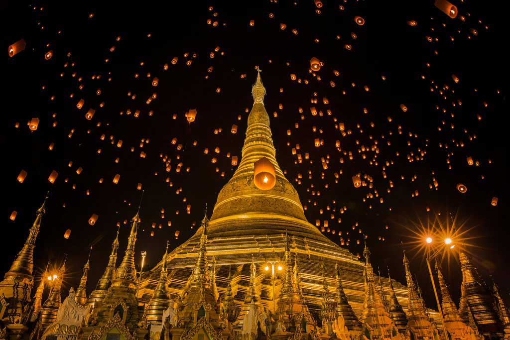
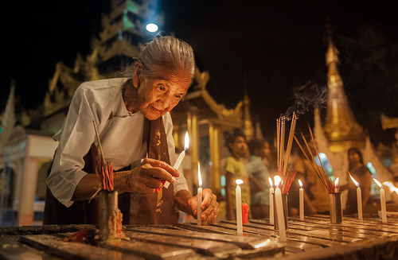
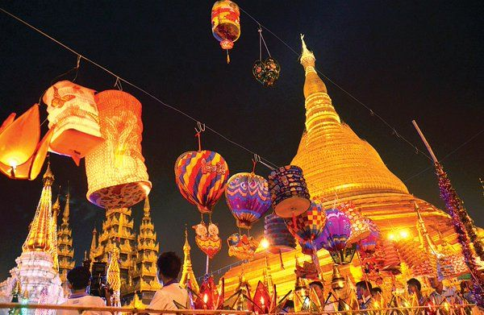
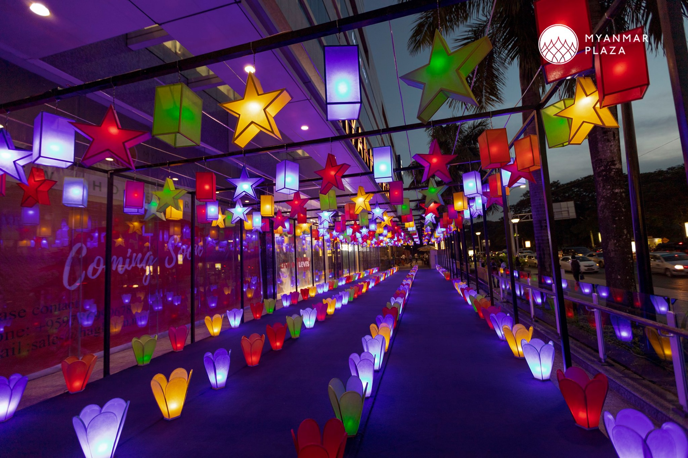

What is Thadingyut Festival? |
||
|
The Thadingyut Festival (Burmese: သီတင်းကျွတ်ပွဲတော်) is the lighting festival of Myanmar, held on the full moon day of the Thadingyut, the seventh month of Burmese lunar year. Thadingyut is the second most popular festival in the country, celebrated by millions of Buddhists across Myanmar. It is one of the religious festivals which marks the end of Buddhist Lent. It is the celebrations of the Buddha’s descent from heaven, where he had spent three months preaching the Abhidhamma to his mother, who died seven days after Buddha was born and was reborn in heaven. The stairways made of gold, silver and rubies were made for the Buddha to descend back to the earthly realm. In order to celebrate his return, his path was illuminated with lights. The tradition of displaying lights continues to this day. This festival is celebrated throughout the country usually, for three days, beginning on the day before the full moon day and lasting until the day after the full moon day. | ||
|   | ||
|
During these days, pagodas and monasteries are crowded with people. Most of the houses, public buildings, parks are decorated with electric lights, candles, and lanterns.The streets are full of people strolling through the markets and food stalls. They celebrate this time with traditional open air performances and concerts. |
|   |